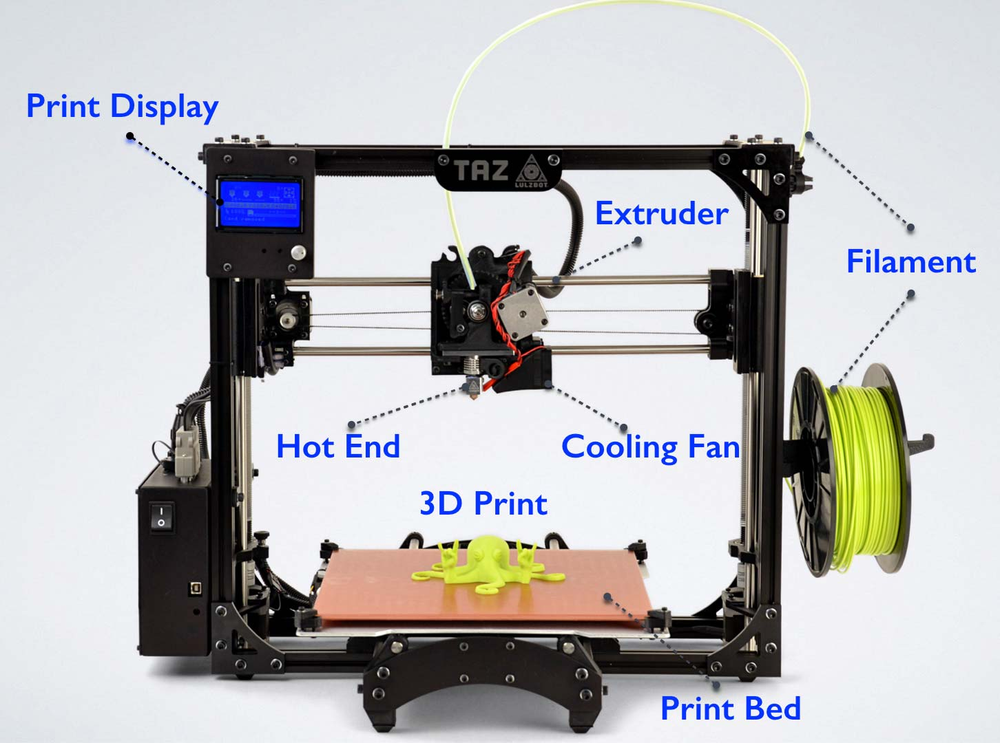

3D Printing (1 June)
Introduction
3D printing or additive manufacturing is a process of making three dimensional solid objects from a digital file. The creation of a 3D printed object is achieved using additive processes. In an additive process an object is created by laying down successive layers of material until the object is created. Each of these layers can be seen as a thinly sliced horizontal cross-section of the eventual object. 3D printing is the opposite of subtractive manufacturing which is cutting out / hollowing out a piece of metal or plastic with for instance a milling machine. 3D printing enables you to produce complex shapes using less material than traditional manufacturing methods.
The Advantages of 3D Printing:
- puts manufacturing in the hands of the public
- you are able to create almost anything with 3D printing
- ideal for rapid prototyping
The Disadvantages of 3D Printing:
- process is very slow as compared to manufacturing by at least 100 times
- prototypes do not have the strength of actual products
Process of 3D Printing
The process of 3D printing can be broken down as follows:
- Designing process - can be either your own digital model that was created via programs (such as Fusion 360, SketchUp or Rhino) or using a previously designed model from websites such as Thingiverse
- Conversion of design - the design has to be converted into a representable file (such as a .stl or .obj file)
- Converting the layers into instructions for the 3D printer (gcode)
- Printing of 3D object
Types of 3D Printers
There are many types of 3D printers available with different Advantages and Disadvanteges but the ones below are the more commonly used ones:
- FFF (Fused Filament Fabrication) where a filament is heated/fused and deposited a layer at a time.
- SLA (Stereolithography) uses a photochemical process which places a chemical/resin and uses a light source to harden each layer.
- SLS (Selective Layer Sintering) is a technique that uses a laser as a power source to sinter/fuse powdered material at points to create a solid structure.
We are mainly using the FFF. There are two types of FFF printers.
- Cartesian, where it moves in X-Y-Z direction
- Delta, where it moves in a polar-Z direction

Click to enlarge
Below shows the different parts of a FFF printer. It comes in different shapes and sizes but the parts and principles remain the same.
{kind=link}